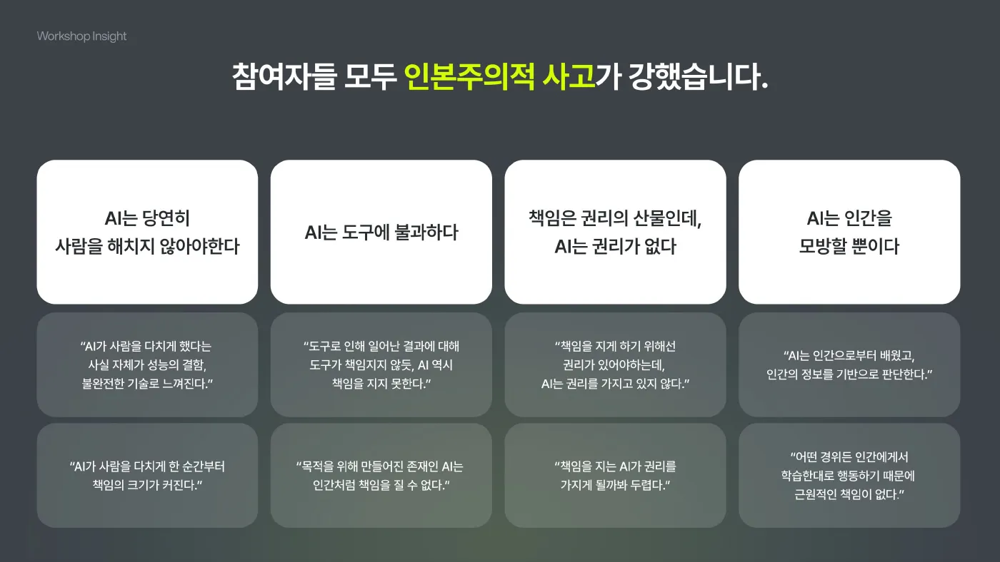
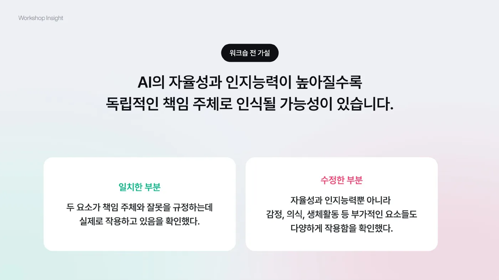
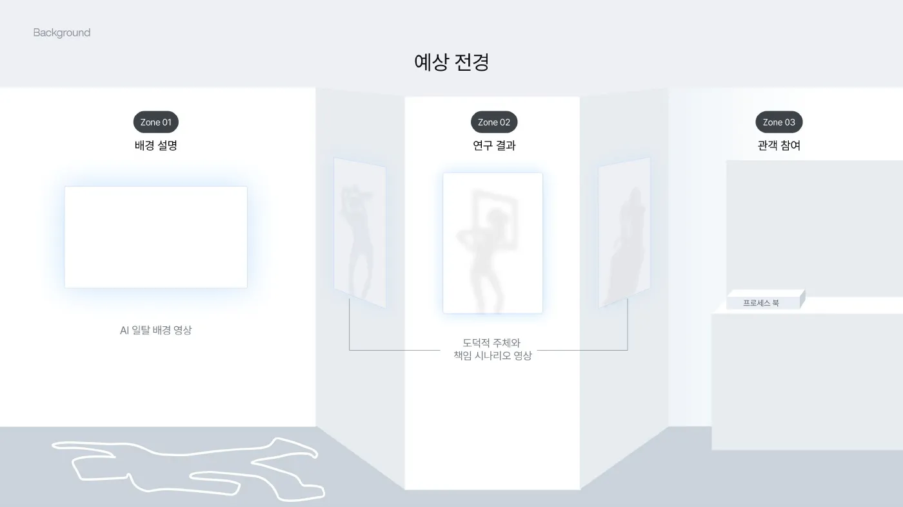

08주차
워크숍 · 전시 계획 · 최신

1차 워크숍에서 쓴 네 가지 피해 사례 워크숍 인사이트 — 참여자 발언 정리 워크숍 전 가설과, 확인·수정한 부분 예상 전경 — Zone 01 · 02 · 03
1차 워크숍을 마치고, 2차를 설계했다
“AI도 책임을 져야 할까?”를 직접 물어보는 1차 워크숍을 열었다. 실화를 재구성한 네 가지 피해 시나리오(신상정보 노출, 부정 채용 탈락, 로봇팔 부상, 자율주행 사고사)를 놓고 책임이 누구에게 있는지 이야기했다.
- 참여자 모두 인본주의적 사고가 강했다. “AI는 도구에 불과하다”, “책임은 권리의 산물인데 AI는 권리가 없다”는 반응이 나왔다.
- 결국 책임은 인간(설계자·기업, 또는 사용자)에게 있다는 의견이 다수였지만, AI가 책임을 지는 일에 대한 우려도 계속 남았다.
- 워크숍 전 가설은 “AI의 자율성과 인지능력이 높아질수록 독립적인 책임 주체로 인식될 가능성”. 가설은 대체로 맞았고, 감정·의식·생체활동 같은 요소도 함께 작용한다는 점을 수정했다.
- 2차 워크숍은 극단적 피해 시나리오(인간 A가 사망함 / 피해를 입음)를 두고, 책임 주체가 되기 위한 조건과 책임의 형태를 묻는다.
- 전시는 세 구역으로 구상 중이다. 배경 설명 · 연구 결과(도덕적 주체와 책임 시나리오 영상) · 관객 참여.


